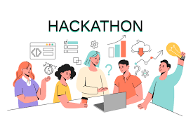

Past Experience

Full Stack Development
Completed a Full Stack Internship via Internshala, gaining experience in building dynamic web applications.

Data Science abd Machine Learning Internship
Gained hands-on experience with data preprocessing, model training, and real-world applications using Python, Pandas, and Scikit-learn. Worked on a project involving prediction using supervised learning techniques.

Python Programming
I developed multiple projects including a calculator, password generator, and Rock-Paper-Scissors game. Gained practical experience in core Python concepts, logic building, and user-friendly interface design.

Hackathons
Participated in two competitive hackathons where we developed end-to-end tech solutions under tight deadlines:
National Hackathon 4.0: Built a centralized healthcare portal with secure authentication,
Internal Hackathon 3.0: Developed a Personalized Nutrition & Diet Recommendation System
that analyzed user health data and dietary habits to generate AI-driven meal plans.